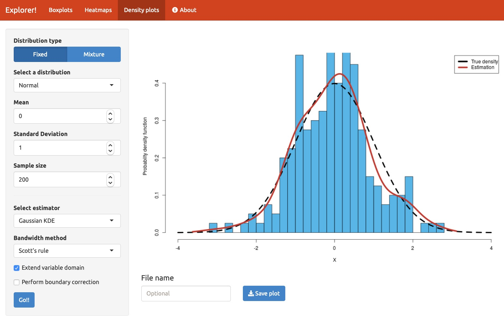
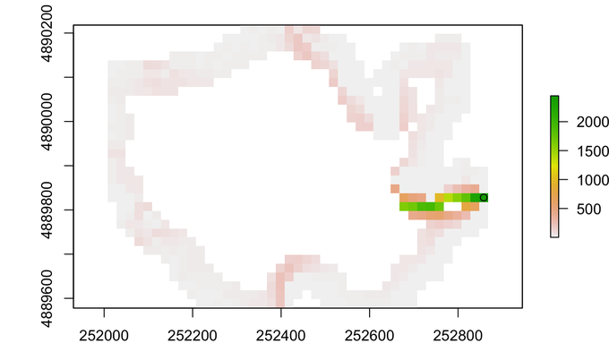
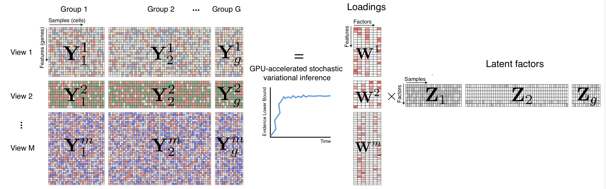
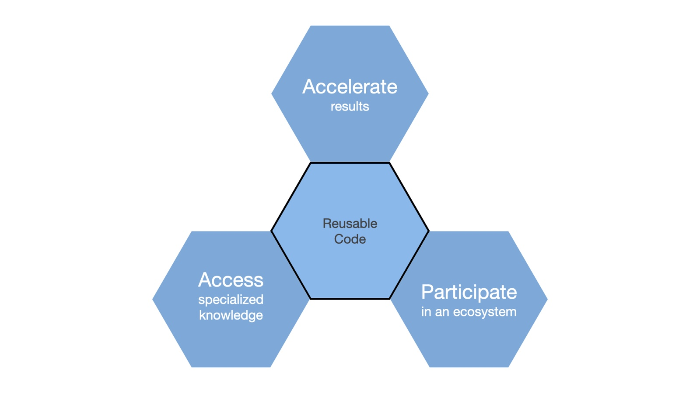

2020-07-28
A colleague recently asked me an intriguing question:
“Do you know of any good examples of R and Python interoperability being used to solve real-world problems instead of just toy examples?”
I had to admit that I hadn’t gone looking for such examples but that I’d see if I could find any. So I put the following query out on Twitter:
Does anyone have a cool mixed R and Python app (probably in R Markdown but not required) that they’d like to share? Ideally it would be one that shows both languages to their best advantage.
I received several responses to my plea, so I thought I’d share them here to illustrate some of the characteristics of R interoperability “in the wild.” At the end, I’ll use these examples to discuss three broad motivations for interoperability that readers may find useful.

The first example I’d like to share is a simulation built by Tomas Capretto (@CaprettoTomas), who described it as follows:
I have an application built on Shiny that uses functions to estimate densities
written in Python. It works both in http://shinyapps.io and locally.
Online app: https://tomicapretto.shinyapps.io/simulation-app/
More info: https://github.com/tomicapretto/density_estimation
As I’ll discuss in the next section, this application shows a common division of labor in interoperable applications: it uses an interactive user interface based on Shiny that then calls a collection of Python routines that do the primary computation.
By the way, another of my respondents, Nikolay Dudaev (@nikdudaev), built his application to work the other way around from this first one:
There is something I cannot share but I do all the analysis, tidying, transformations etc in R and then display the results in the app written in Python and Dash.

Another common interoperability use case is using another language to gain access to a unique code base. In this case, Dewey Dunnington (@paleolimbot ) needed a Geographic Information System (GIS) installer called QGIS, which gives him access to SAGA and GRASS GIS systems.
Not sure if this totally fits the bill, but it’s Python + R working together in the same blog post!
https://fishandwhistle.net/post/2020/calling-qgis-from-r/
While Dewey notes that he could have done this using R libraries that access the SAGA and GRASS systems, he ultimately decided that it was easier just to call the Python versions which already had QGIS installed.

OK, I admit it: I only have the vaguest idea of what this program does. Fortunately the repository pointed to by Ryan Thompson’s (@DarwinAwdWinner) tweet provides a pretty good description, provided you know about multi-omic data sets.
MOFA is written partly in Python and partly in R:
https://github.com/bioFAM/MOFA2
See Ryan’s Github repo for more details. Interoperability takes place during the processing workflow as follows: 1. The user loads the source data and trains the model using either a Python notebook or R code (which calls Python code using the reticulate package). Both versions process the training data and output a model. 2. The model data is then processed downstream for viewing and interactive exploration using Shiny. At present, the downstream process only runs in R.

“If I have seen further, it is by standing on the shoulders of giants.” – Isaac Newton, 1675
When faced with a difficult challenge in their jobs, few data scientists say to themselves, “I think I’ll include new languages in my analysis just for fun.” Instead, data scientists typically write interoperable code to solve problems and to build on the work of others, just as Isaac Newton said 345 years ago.
Our examples above illustrate three motivations that underlie many interoperable applications. These motivations frequently overlap and in some situations, all three might apply. Nonetheless, many interoperable applications come about because data scientists want to:
The examples I’ve given here are only a small subset of many interoperability efforts taking place in the R and Python communities. If you have other interoperability examples you’d like to showcase, please send me an email at carl@rstudio.com or tag me on Twitter at @cdhowe. I’m particularly interested in how you arrived at your interoperability approach and what benefits you gained from interoperability.